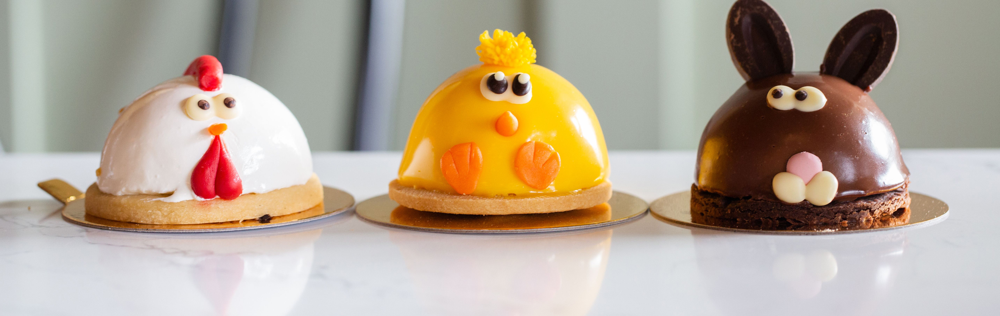
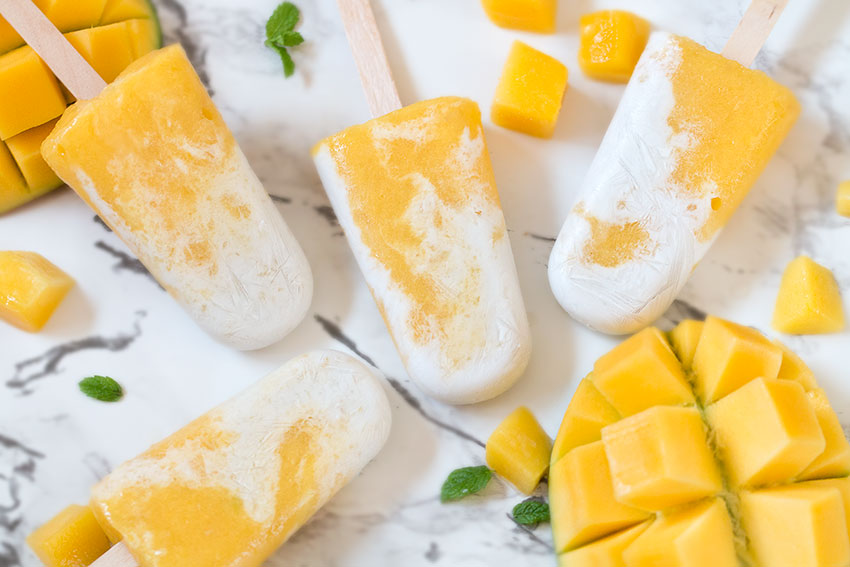
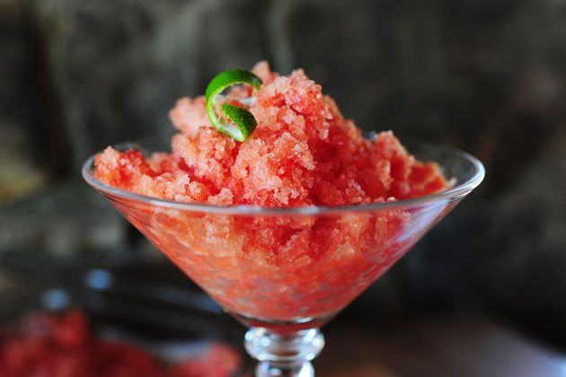
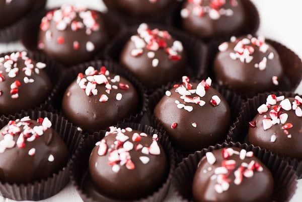
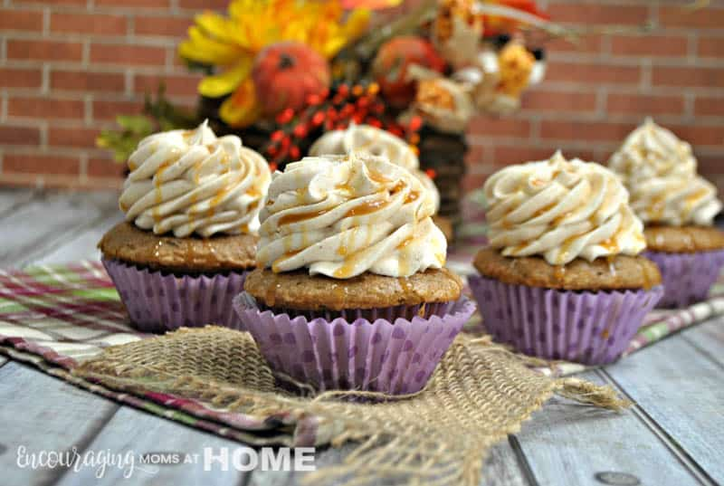
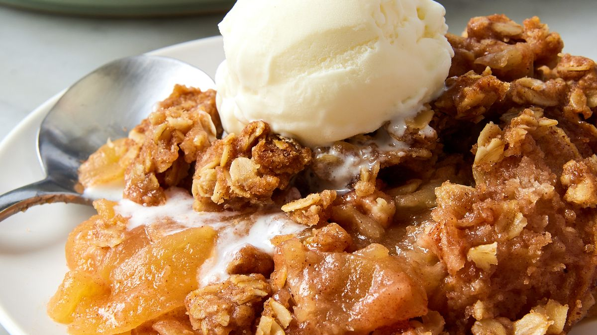
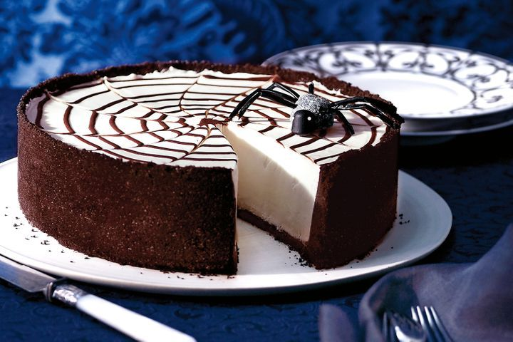
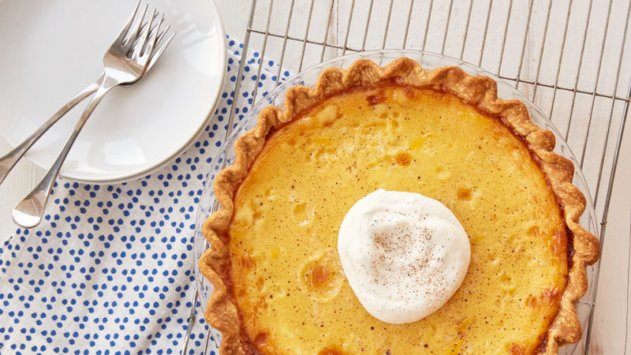

Seasonal Specials

Welcome to our "Seasonal Specials" page, where we celebrate the flavors of each season with delightful dessert creations. Whether you're cooling off in the summer heat, indulging in holiday favorites, or embracing the cozy flavors of fall, we have something special for every occasion.
Summer Treats...
Beat the heat with these refreshing desserts perfect for hot summer days:
- Mango Coconut Popsicles:Blend ripe mangoes with coconut milk and a touch of honey, then freeze in popsicle molds for a tropical treat.
- Watermelon Granita:Blend fresh watermelon chunks with lime juice and a hint of mint, then freeze and scrape with a fork for a refreshing granita.


Holiday Favorites:
Celebrate special occasions with these festive dessert recipes:
- Peppermint Chocolate Truffles: Indulge in rich chocolate truffles infused with peppermint extract and rolled in crushed candy canes for a holiday twist.
- Gingerbread Cookies: Bake and decorate classic gingerbread cookies in festive shapes, perfect for Christmas celebrations.

Fall Flavors:
Embrace the cozy flavors of autumn with these pumpkin and spice dessert recipes:
- Pumpkin Spice Latte Cupcakes:: Moist pumpkin spice cupcakes topped with espresso-infused frosting and a sprinkle of cinnamon.
- Apple Crisp: Enjoy tender apples baked with a spiced oat crumble topping, served warm with a scoop of vanilla ice cream.


Festive Desserts for Christmas, Halloween, etc.:
Celebrate holidays with these special desserts:
- Spooky Spiderweb Cheesecake:Decorate a creamy cheesecake with chocolate spiderweb patterns for a spooky Halloween dessert.
- Eggnog Custard Tarts:Delight in individual-sized custard tarts flavored with nutmeg and rum essence, perfect for holiday gatherings.

